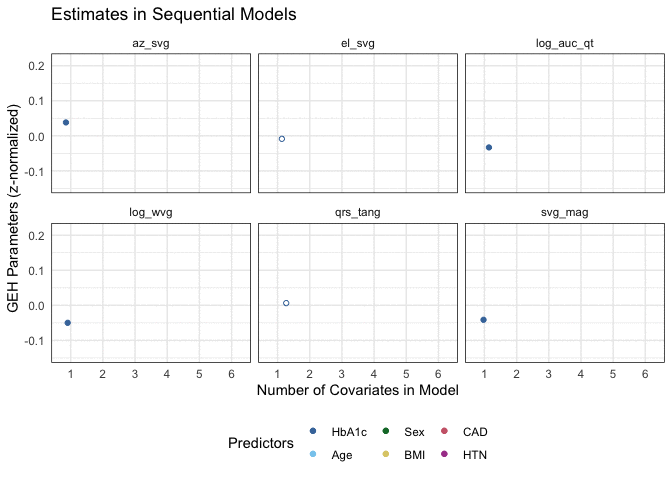

8.1 Modeling Multiple Outcomes and Predictors
A recurrent issue with causality-focused modeling with ECG data is that there are multiple outcomes (different ECG features). For example, in the card package, the geh dataset contains several ECG features based on vectorcardiography.
8.1.1 Creating Multiple Models
## [1] "pid" "hhp_id" "age"
## [4] "sex" "age_cat" "systolic_bp_first"
## [7] "systolic_bp_second" "systolic_bp_third" "diastolic_bp_first"
## [10] "diastolic_bp_second" "diastolic_bp_third" "pulse_rate_first"
## [13] "pulse_rate_second" "height_cm" "weight_kg"
## [16] "waist_cm" "dia_trt_allopdrug" "hbp_trt_allopdrug"
## [19] "hyp_trt_allopdrug" "lab_hba1c" "lab_fasting_bg"
## [22] "lab_fasting_insulin" "lab_tchol" "lab_ldlchol"
## [25] "lab_hdlchol" "lab_triglyc" "lab_ser_urea"
## [28] "lab_ser_creatinine" "lab_urin_malbumin" "pd_heart"
## [31] "bmi" "bmi_cat" "obese"
## [34] "obese_asian" "sbp_mean" "dbp_mean"
## [37] "pulse_mean" "htn" "cad"
## [40] "drugs_dm" "dm" "dm_lab"
## [43] "dm_control" "dm_pre" "homa"
## [46] "high_waist" "high_tchol" "high_ldl"
## [49] "low_hdl" "high_triglyc" "met_syn_num"
## [52] "met_syn" "pr_interval" "p_duration"
## [55] "p_amp" "qrs_duration" "qt_interval"
## [58] "cornell_voltage" "nhanes_score" "svg_mag"
## [61] "az_svg" "az_svg_m" "el_svg"
## [64] "el_svg_m" "qrs_tang" "auc_vm_qt"
## [67] "wvg" "log_svg" "log_auc_qt"
## [70] "log_wvg"The first issue is the causal model, which can be visualized using a directed acyclic graph. The variables of interest are a subset of the dataset. In this case, we’re looking at the relationship of diabetes with cardiotoxicity in a very small subset of participants.
##
## Attaching package: 'ggdag'## The following object is masked from 'package:stats':
##
## filterbd <- dagify(
GEH ~ DM + Age + BMI + HTN + CAD + IR + Sex,
DM ~ Age + IR + BMI,
CAD ~ DM + BMI + HTN + Age + Sex,
HTN ~ Age,
IR ~ BMI + Age,
Age ~ Sex,
exposure = "DM",
outcome = "GEH"
)
d1 <- ggdag_parents(bd, "DM", layout = "star") +
theme_dag() +
theme(legend.position = "none") +
labs(title = "Factors Affecting Diabetes")
d2 <- ggdag_parents(bd, "GEH", layout = "star") +
theme_dag() +
theme(legend.position = "none") +
labs(title = "Factors Affecting GEH")
# Combine and plot
gridExtra::grid.arrange(d1, d2, nrow = 1)As we can see, many things effect ECG findings, and a subgroup of those impact diabetes, suggesting a number of potential effect modifiers and potential confounders/mediators. Using a sequential model building method in the card package allows for a simple way to perform this analysis. This will build a linear model for each outcome, and repeat the model with an additional covariate in the sequence of listed in the formula.
# Select variables
vars <-
c("svg_mag", "az_svg", "el_svg", "qrs_tang", "log_auc_qt", "log_wvg", "lab_hba1c", "lab_fasting_bg", "homa", "dm", "age", "bmi", "bmi_cat", "age_cat", "sex", "htn", "cad", "lab_ser_creatinine", "lab_tchol")
df <-
geh %>%
select(all_of(vars)) %>%
#na.omit() %>%
#filter(homa <= 5 * sd(homa, na.rm = TRUE)) %>% # Remove outliers
mutate(
bmi_cat =
factor(bmi_cat, levels = c(0:3),
labels = c("Underweight", "Normal", "Overweight", "Obese")),
age_cat =
factor(age_cat, levels = c(0:2),
labels = c("<45", "45-65", ">65")),
sex = factor(sex, levels = c(0,1), labels = c("Female", "Male"))
) %>%
mutate(across(
c(svg_mag, az_svg, el_svg, qrs_tang, log_auc_qt, log_wvg),
function(x) {
as.vector(scale(x, center = TRUE, scale = TRUE))
}
))
# Sequential model building
models <-
card::build_sequential_models(
svg_mag + az_svg + el_svg + qrs_tang + log_auc_qt + log_wvg ~
lab_hba1c + age + sex + bmi + cad + htn,
data = df,
exposure = "lab_hba1c",
engine = "lm"
)
head(models)## # A tibble: 6 x 9
## outcomes term estimate std.error statistic p.value conf.low conf.high covar
## <chr> <chr> <dbl> <dbl> <dbl> <dbl> <dbl> <dbl> <dbl>
## 1 svg_mag (Inter… 0.339 0.196 1.73 0.0847 -0.0466 0.724 1
## 2 svg_mag lab_hb… -0.0412 0.0234 -1.76 0.0796 -0.0872 0.00488 1
## 3 az_svg (Inter… -0.315 0.195 -1.62 0.107 -0.698 0.0681 1
## 4 az_svg lab_hb… 0.0381 0.0233 1.64 0.102 -0.00763 0.0839 1
## 5 el_svg (Inter… 0.0767 0.195 0.394 0.694 -0.306 0.460 1
## 6 el_svg lab_hb… -0.00862 0.0233 -0.370 0.711 -0.0544 0.0371 18.1.2 Visualize Regression Estimates
To assess or get a sense of how the variables are playing out, we can visualize the estimates across the builds of the models. This will also use the gganimate package to show the effect of data layering
# Libraries
library(gganimate)
library(ggthemes)
# Data
df <-
models %>%
# Remove intercepts
filter(term != "(Intercept)") %>%
# Sequence the terms
mutate(
term =
factor(
term,
levels = c("lab_hba1c", "age", "sexMale", "bmi", "cad1", "htn1"),
labels = c("HbA1c", "Age", "Sex", "BMI", "CAD", "HTN")
)
)
# ggplot
g <- ggplot(df, aes(x = factor(covar), y = estimate, color = term)) +
facet_wrap(~outcomes, scales = "fixed") +
geom_point(
aes(color = term),
data = filter(df, p.value >= 0.20),
shape = 1,
position = "jitter"
) +
geom_point(
aes(color = term),
data = filter(df, p.value < 0.20),
shape = 19,
position = "jitter"
) +
scale_color_ptol(name = "Predictors") +
theme_minimal() +
theme(
legend.position = "bottom", legend.box = "horizontal",
panel.border = element_rect(colour = "black", fill = NA)
) +
labs(
title = "Estimates in Sequential Models",
x = "Number of Covariates in Model",
y = "GEH Parameters (z-normalized)"
)
# Animated
a <- g + transition_reveal(covar)
animate(a, end_pause = 30)